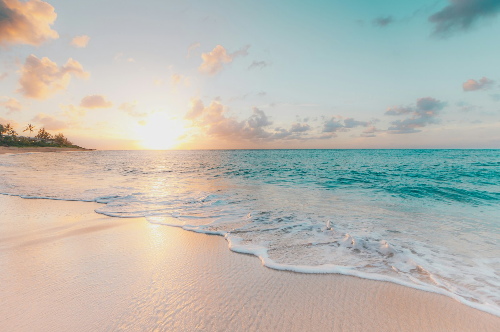
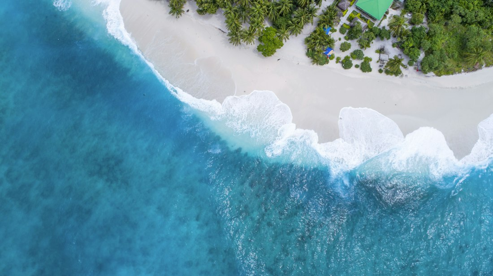
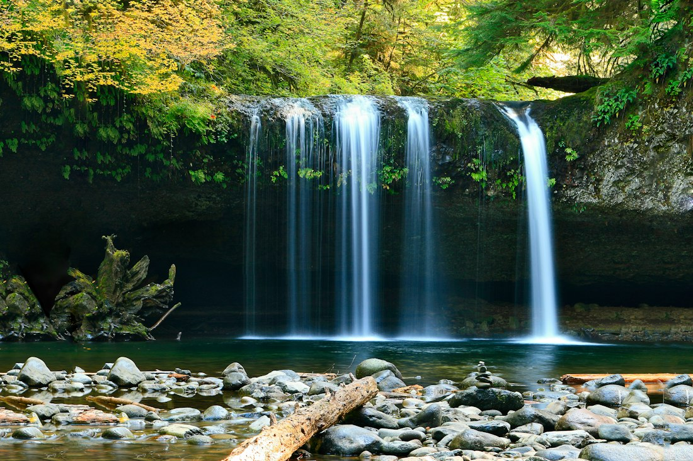
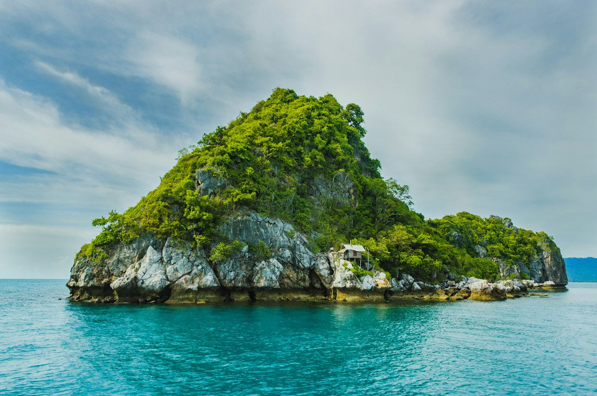

Itacaré · Bahia
Transporte e turismo · Itacaré, Bahia
Alugar uma van em Itacaré nunca foi tão fácil.
Vans novas com motorista, traslados de Ilhéus até Itacaré e os passeios mais bonitos da costa. Segurança e pontualidade do primeiro contato ao retorno.
- 15lugares na Sprinter
- 2pax no Siena (ida/volta)
- Diáriosaídas de Itacaré


Reserva direta
no WhatsApp
próximo traslado · Ilhéus → Itacaré
O que a Fertur faz
Do aeroporto ao passeio, com o mesmo motorista
Traslados
Ilhéus ↔ Itacaré
Excursões
roteiros de dia inteiro
Passeios
praias, cachoeira e ilhas
Vans com motorista
Siena até 2 pax · Sprinter 15
Serviços exclusivos
roteiro só do seu grupo
Grupos e eventos
fretamento sob medida
Saídas de Itacaré
Os passeios que a gente roda

dia inteiroTijuípe · Itacaré
4 Praias e Cachoeira

dia inteiroBaía de Camamu · BA
Passeio das Ilhas
Nenhum passeio nessa categoria por enquanto.
0lugares na Sprinter
0modelos na frota
0passeios guiados
Itacarébase na Orla, centro
Por que a Fertur
Quem mora aqui conhece o caminho
Transporte e turismo em Itacaré, com frota própria e atendimento direto — sem intermediário entre você e o motorista.
-
Vans novas
Veículos revisados e com ar-condicionado para as estradas da costa.
-
Pontualidade
Saída no horário combinado, com folga para o voo em Ilhéus.
-
Motorista local
Quem dirige é de Itacaré: sabe o atalho, a maré e onde parar.
-
WhatsApp direto
Reserva e dúvidas no (73) 99987-4058, sem formulário longo.
Avaliações reais no Facebook da Fertur
Simples assim
Reservar leva três mensagens
-
01
Chame no WhatsApp
Diga a data, quantas pessoas e se precisa de traslado, passeio ou os dois.
-
02
Receba o orçamento
A gente responde com o veículo ideal — Siena até 2 pax ou Sprinter até 15 — e o valor fechado.
-
03
Motorista no local
Confirmação por mensagem e o motorista esperando no aeroporto, na pousada ou na Orla.
Fale com a Fertur
Peça seu orçamento sem compromisso
Reservas pelo WhatsApp (73) 99987-4058. Comercial: comercial@fertur.com.br · Logística: contato@fertur.com.br